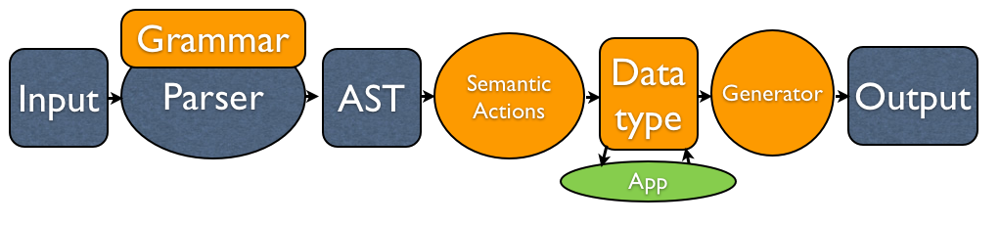
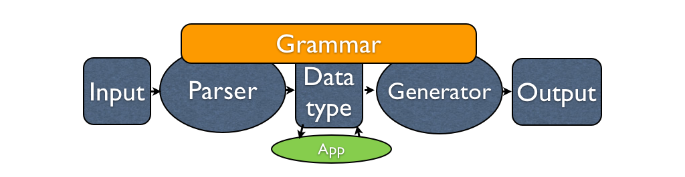
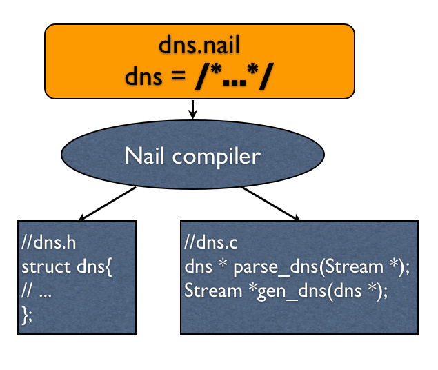

Nail
Julian Bangert, Nickolai Zeldovich
julian, nickolai <@> mit.edu
Problem
- Difficult to handle data formats securely:
- Hand-written parsers are error prone
- One-off parsers interpret data differently
- Many security vulnerabilities
State of the art
- Grammar-based parsers such as [Hammer]
- Reusable across applications
- Shortcomings:
- Cannot handle complex formats
- Semantic actions and data types written by hand
- Output generation by hand
Nail
- Goals:
- Grammar describes format and data type
- Handle real-world formats
Overview
- Based on Parser Expression Grammars
- Semantic Combinators
- Structure instead of sequence
- Labelled options
- Dependency fields
- Hide structural elements
- Streams
- Capture non-linear formats
- Encodings
Rest of the talk
- Parsing bug case study
- Nail's Design
- Implementation
- Evaluation
Recent high profile vulnerabilities
- PKI Layer Cake in X.509
- iOS evasi0n jailbreaks
- Android Master Key
Case Study
- 15 .ZIP CVE's in the last 3 years
- 11 memory corruption bugs
- Risky pointer manipulation
- Mitigation: ASLR, safer languages, …
- 4 parser ambiguities
- Same data interpreted differently
- Master Key: Java and C ZIP parser
- Same data interpreted differently
- 11 memory corruption bugs
- Hand-written parsers fail
Existing Tools cannot represent real formats
|

|
Design
- Bijection
- Streams
Bijection
- Define internal types to represent the data
- No Semantic Actions.
- Generate output.
Structures
dns_header={
id uint16
qr uint1
opcode uint4
aa uint1
tc uint1
rd uint1
ra uint1
uint3 = 0
}
|
struct dns_header {
uint16_t id;
uint8_t qr;
uint8_t opcode;
uint8_t aa;
uint8_t tc;
uint8_t rd;
uint8_t ra;
};
|
payload choose {
ICMP = <uint16= 1; icmp>
ARP = <uint16= 0x0806; arpfour>
IPFOUR = <uint16= 0x0800; ipfour>
}
|
struct payload{
enum {ICMP,ARPFOUR,IPFOURE} N_type;
union {
icmp icmp;
arpfour arp;
ipfour ipfour;
};
}
|
Semantic bijection
- Sometimes, bijection is tricky
padded_string={
contents many uint8 | ![0]
many (uint8=0)
}
- Semantic bijection
- parser(generator(x)) = x
- generator(parser(x)) need not be x
- Semantics are preserved, syntax not necessarily
Streams
|
|
Dependency Fields
- Fields that depend on data layout or values of other fields
- Length
- Offsets
- Checksums
- Nail never exposes them to the programmer
- Programmer might forget to update length field when adding answers to a DNS packet
- Programmer should not have to find the right bytes in the format to compute a checksum over
Transformations
- Transformations are a pair of functions that modify streams.
- Example: offset transform
- Parsing function extracts a substream starting at an offset from a stream
int offset_u32_parse(NailArena *tmp, NailStream *out_fragment, NailStream *in_whole,
const uint32_t *offset);
- Generating function appends a substream to a stream and records its offset
int offset_u32_generate(NailArena *tmp, NailStream *in_fragment, NailStream *out_whole,
const uint32_t *offset);
- Common transformations are provided.
- Programmers can write their own, for example to find the ZIP directory.
Nail Syntax
end_of_directory ($file) = {
@directory_size uint32
$dirstr1 transform offset_u32 ($filestream @directory_start)
files apply $directory_stream directory($file)
}
zip_file = {
$filestream, $end_directory transform zip_end_of_directory ($current)
contents apply $end_directory end_of_directory($filestream)
}
- @-sign: Dependent fields
- $-sign: Streams
- transform invokes external functions
- apply applies a different Nail grammar to a stream. Parsing resumes at this location.
@questioncount uint16 @answercount uint16 //... questions n_of @questioncount question responses n_of @answercount answer
Implementation
- Current implementation for C programs
- Implemented in 1800 lines of C++
- Self-hosting: Parses Nail grammars with Nail
Evaluation
- Can Nail implement real protocols?
- Are Streams and Dependency Fields necessary?
- Does Nail reduce programmer effort?
- Are applications built with Nail performant?
Protocols implemented
- UDP Network stack:
- Checksums
- Lengths
- DNS:
- Transformations for label compression
- Count fields in the packet header
- ZIP:
- Multiple structures referred to by offset and size
- Compression
- Checksums
Programmer effort
| Application | LoC | Lo Transformations | Lo Grammar | LoC w/o Nail |
| DNS server | 183 | 64 | 92 | 683(Hammer) |
| DNS client | 97 | (In Libc) | ||
| Unzip | 49 | 78 | 48 | 1600(Info-Zip) |
- Break out grammar vs application
- Nail's bijection reduces programmer effort to implement parsers
Performance
- We benchmarked our Nail server against BIND 9, which has more functionality

Conclusion
- Using grammars can eliminate input handling vulnerabilities
- Grammar-defined datatypes and a semantic bijection reduce programmer effort
- Streams and Dependency fields allow complicated, real-world formats